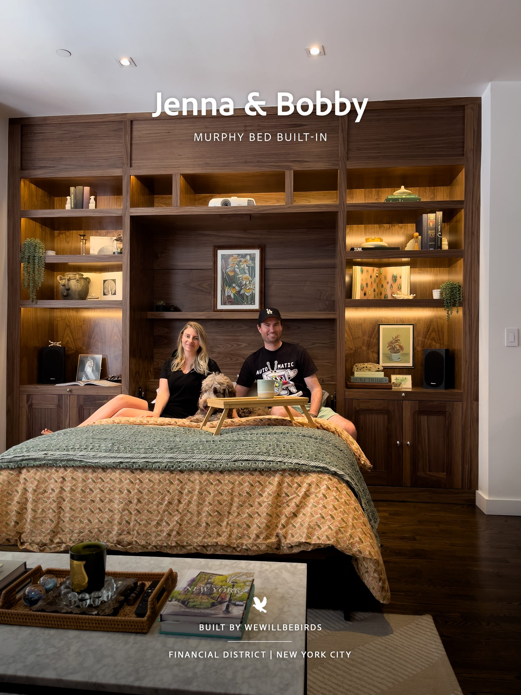
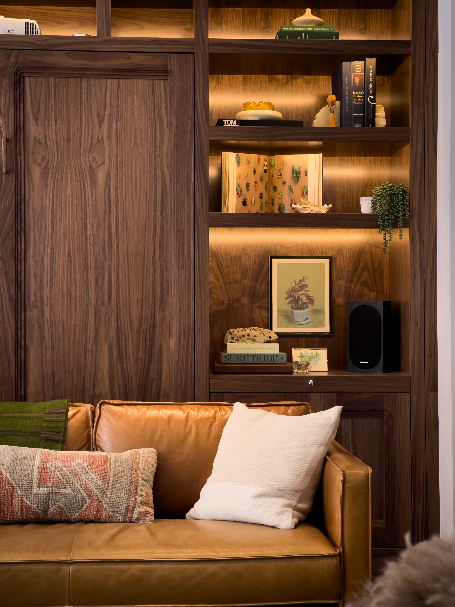
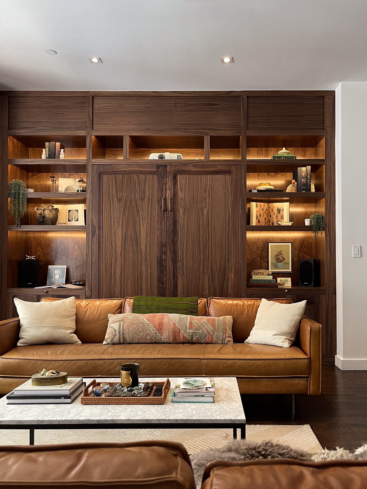
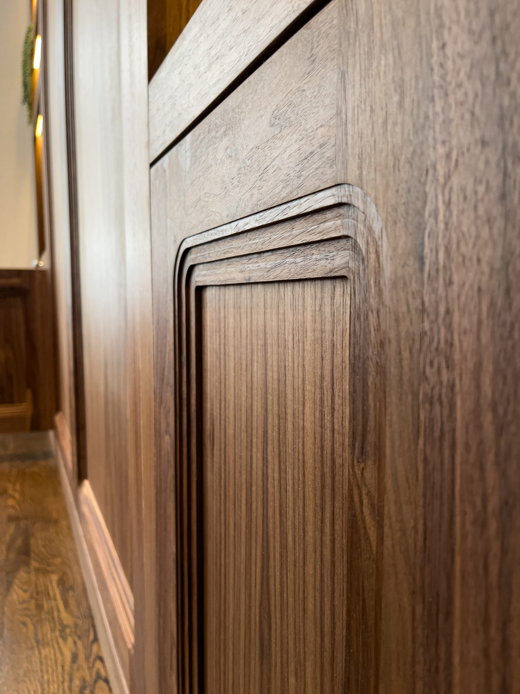
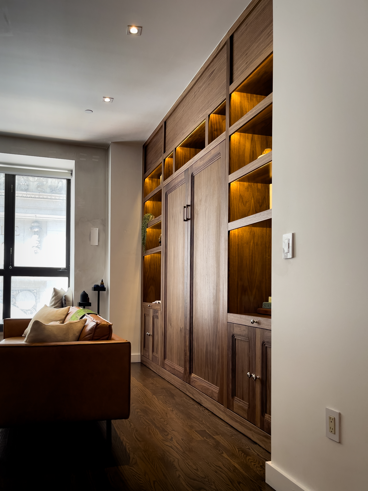
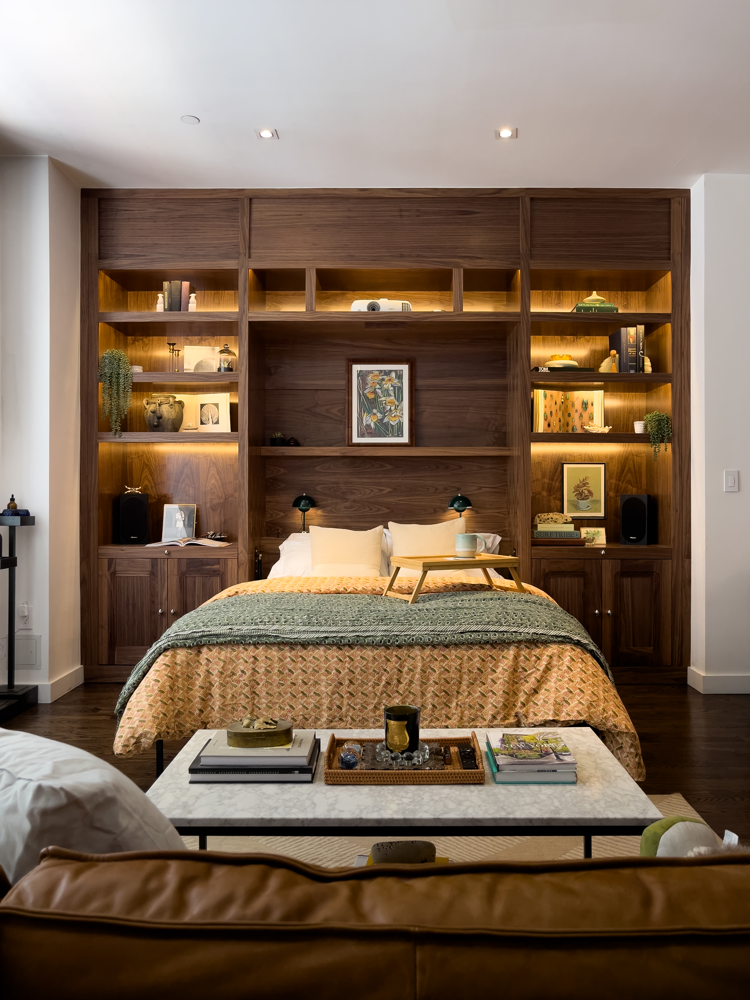
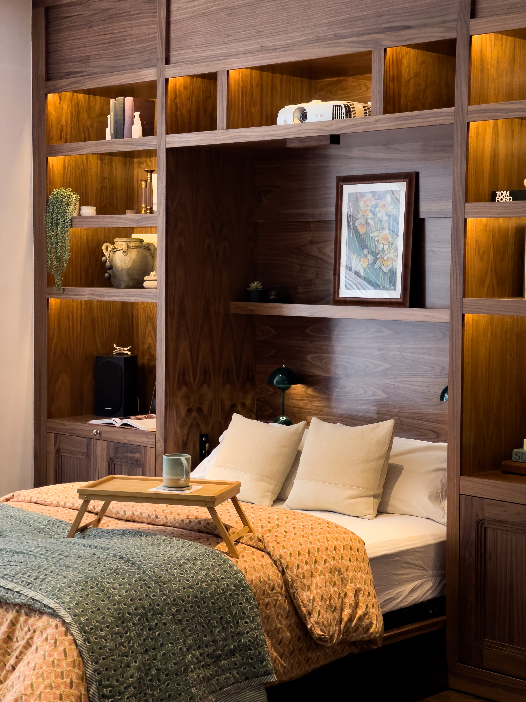
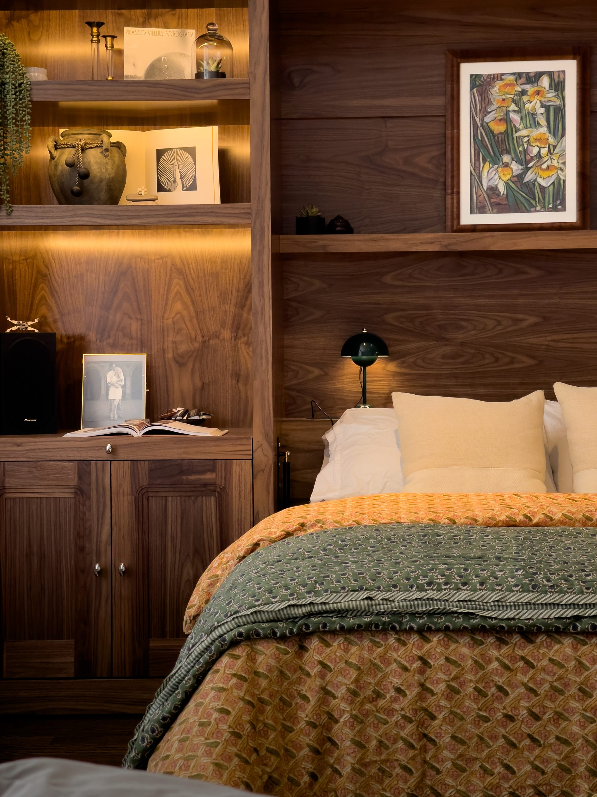

Murphy Bed · Brooklyn



The Story
I like good stories. This one starts with COVID.
The moment New York went quiet in a way that felt impossible. The city didn't die, not even close, but it did something unfamiliar: it held its breath. People ran. Some fled to the suburbs, some disappeared to other states, some simply vanished into the idea that life could be easier somewhere else. For a while, it almost looked like the end of an era.
And then there were the ones who did the opposite.
There was Jenna and Bobby who moved in during COVID. They showed up when the streets were empty, when storefronts were boarded up, when everyone else was leaving. Not exactly a "New York dream" moment. They dragged boxes up a stairwell, signed papers with masks on, and stepped into their new apartment with a strange feeling of starting a life in the middle of something ending.
Their first weeks in New York were the version no one puts on Instagram. The building felt too quiet. The city outside the window looked like an empty movie set. But Jenna and Bobby stayed. They learned the exact sound of each other's silence. They fought over stupid things and made up over even smaller ones. Sometimes they laughed like kids, because if you don't laugh in a storm, you start believing the storm is all there is.
And being part of that, even in a small way, made me realize something. I didn't just build a piece for them. I helped build a tiny part of their New York story.
Because the truth is, I'm always trying to figure out what the point of it all is. I keep trying to name it like it's a tool on a shelf. Purpose. Meaning. The reason. Something solid enough to hold in your hands. Maybe there isn't one. Maybe life is exactly what it looks like: brief, beautiful, brutally temporary. A match struck in the dark. A breath you didn't know you were holding until you finally let it go.
But even if it's temporary, I still catch myself hoping it stays for some time. That when I'm gone, someone will still touch something I built. Open it. Lean on it. Put their keys on it without thinking. Live with it like it's always been there.
From the moment I landed in NYC, I've been in love with the people who live in this place. Everyone who comes here has a story. Everyone arrives with reasons and dreams, even if they pretend they don't. Some people chase success. Some people chase escape. Some people chase love. Some people chase a version of themselves they can't become anywhere else.
New York doesn't care what your reason is. New York just asks if you can survive your own ambition.
It's hard here. It's exhausting. It can feel like you're constantly proving you deserve to exist. You pay for every inch. Not just in rent, but in energy, in patience, in time. The city will take everything you're willing to give. And somehow… we stay.
Maybe that's what makes us New Yorkers. Not the confidence, not the outfits, not the attitude. That part is just armor. The real thing is simpler: We're the ones who didn't leave.
And here's something I don't think people say enough: New York isn't built by the famous. It's built by everyone who refuses to disappear. The couple that stayed through the silence. The nurse walking home at dawn. The dishwasher taking the train at midnight. The immigrant carrying their whole life in a suitcase. The artist, the carpenter, the driver, the bartender, the teacher. All of us building something that holds, even for a moment.
And maybe purpose isn't some grand revelation. Maybe it isn't a single sentence you find and then your life makes sense forever. Maybe purpose is smaller than that. Maybe it's leaving a mark you didn't have to leave, and leaving it well. Maybe it's becoming part of the city's nervous system, quietly, honestly, through work that lasts longer than your mood.
Maybe purpose is walking down a street and knowing the city remembers you, even if it doesn't know your name. Because somewhere behind a window, in a home full of ordinary life, there's a piece of you doing its job.



